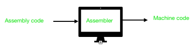

Assemblers, Debuggers and Tools
Assembly is a
low-level
programming language that anyway needs to be converted in machine code to be executed

Bibliography:
https://www.geeksforgeeks.org/introduction-of-assembler/